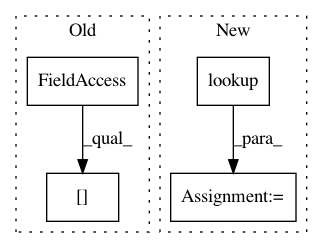

4608f590d88eeaf1661e3911a7ee943f75269321,hypergan/losses/category_loss.py,CategoryLoss,_create,#CategoryLoss#Any#Any#,5
Before Change
category_layer = linear(d_last_layer, sum(config["categories"]), "v_categories",stddev=0.15)
category_layer = batch_norm(config["batch_size"], name="v_cat_loss")(category_layer)
category_layer = config["generator.activation"](category_layer)
categories_l = categories_loss(categories, category_layer, config["batch_size"])
g_losses.append(-1*config["categories_lambda"]*categories_l)
d_losses.append(-1*config["categories_lambda"]*categories_l)
After Change
ops = self.ops
config = self.config
categories = config.categories
activation = ops.lookup(config.activation)
//TODO broken.
// TODO get the d_last_layer
category_layer = gan.discriminator.ops.linear(d_real, sum(config.categories))
category_layer= ops.layer_regularizer(d_real, config.layer_regularizer, config.batch_norm_epsilon)
In pattern: SUPERPATTERN
Frequency: 3
Non-data size: 4
Instances
Project Name: HyperGAN/HyperGAN
Commit Name: 4608f590d88eeaf1661e3911a7ee943f75269321
Time: 2017-06-07
Author: martyn@255bits.com
File Name: hypergan/losses/category_loss.py
Class Name: CategoryLoss
Method Name: _create
Project Name: HyperGAN/HyperGAN
Commit Name: 8a3148f6f973652500853e656274e65070edaf7e
Time: 2017-06-03
Author: martyn@255bits.com
File Name: hypergan/losses/least_squares_loss.py
Class Name: LeastSquaresLoss
Method Name: create
Project Name: googledatalab/pydatalab
Commit Name: d98df66f581dca38bbe7dfc299386921b65bda0d
Time: 2017-09-28
Author: qimingj@users.noreply.github.com
File Name: solutionbox/code_free_ml/mltoolbox/code_free_ml/trainer/task.py
Class Name:
Method Name: make_prediction_output_tensors